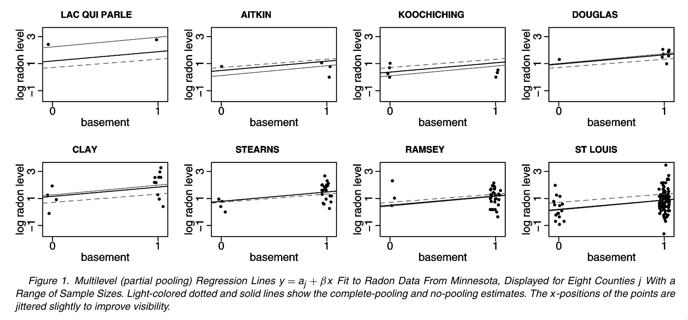
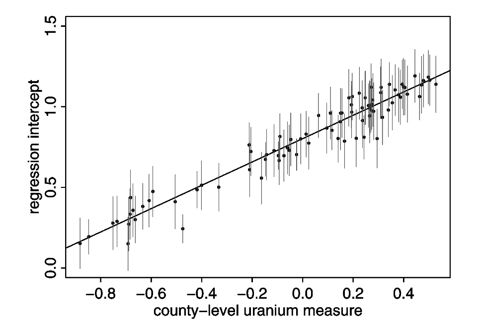
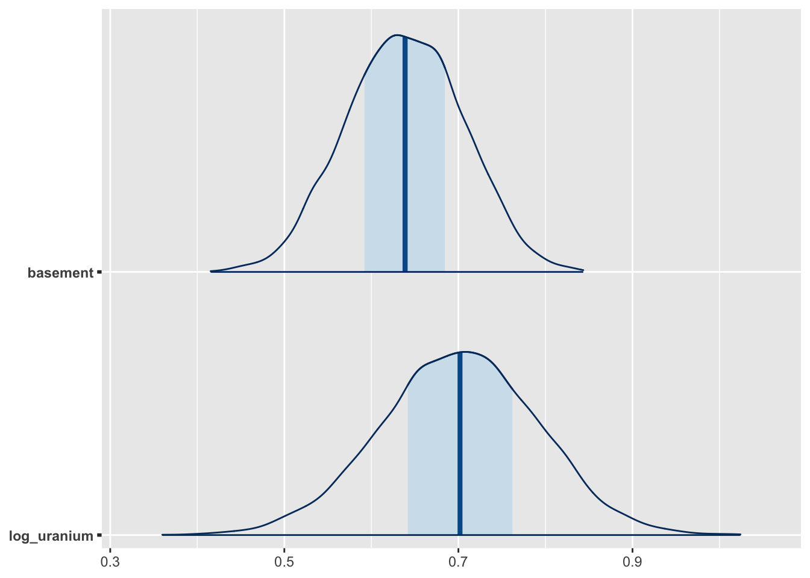
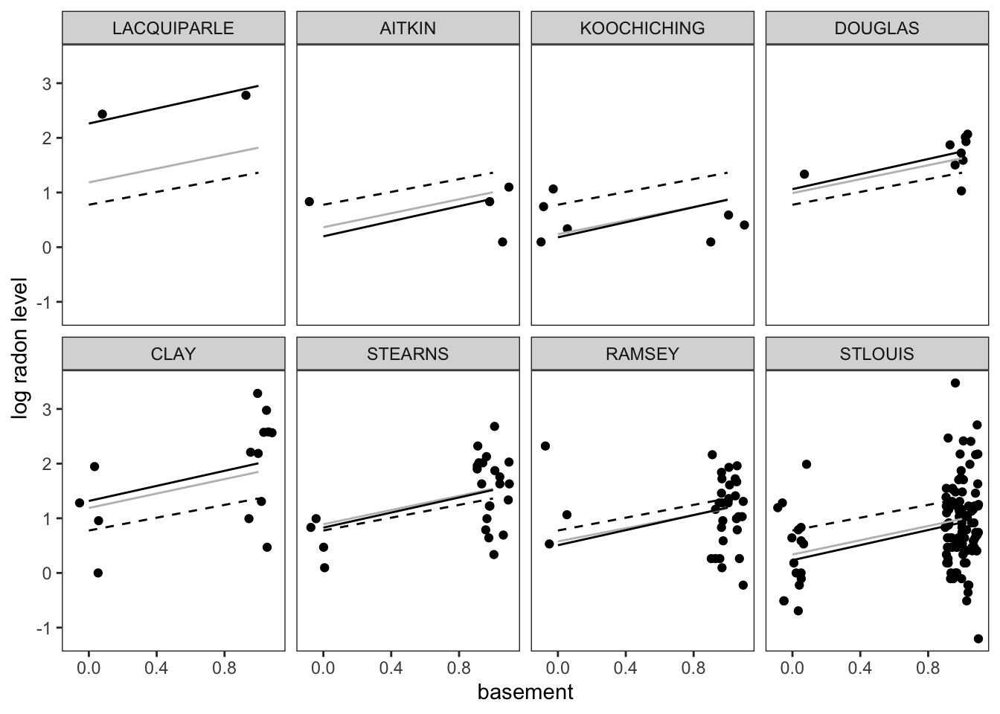
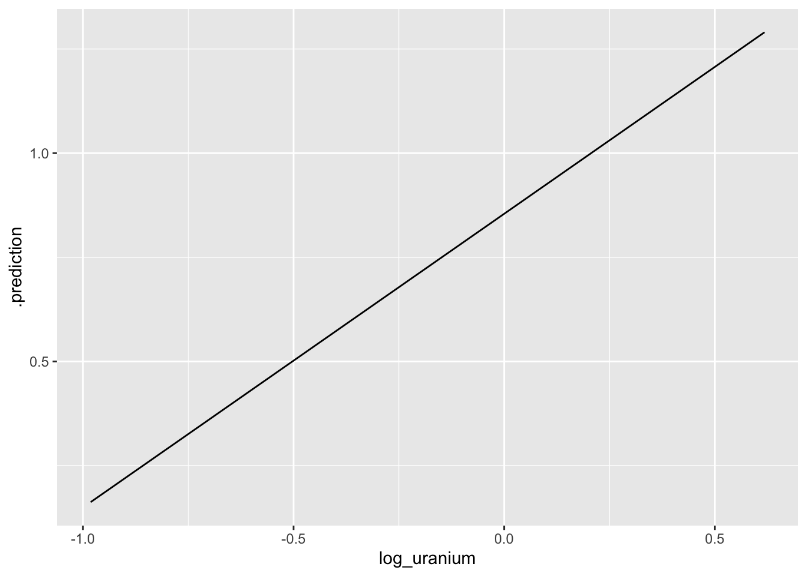

library(ggplot2)
library(tidyr)
library(dplyr)
library(bayesplot)
library(rstanarm)
library(purrr)
library(tidybayes)Re-creating the radon teaching example with rstanarm and tidybayes
Introduction
In this tutorial, we are going to replicate the analysis of household-level variation in radon exposure originally presented in Gelman (2006) (which is actually a tutorial version of Price, Nero, and Gelman (1996)). Our goal is to run the models described in the paper using regression models from base R as well as a Bayesian hierarchical model from the rstanarm package. Finally, we will reproduce Figures 1 & 2 from the original paper using ggplot2:


Preparing to run the examples
To be able to run the code below locally, please do the following:
Install or update to the latest version of RStudio. The tutorial code will be contained in a Quarto markdown document. Quarto (which powers this very website!) is an updated version of the venerable RMarkdown, and the newest versions of RStudio include Quarto support by default.
Set up your R/RStudio installation to be able to load the following packages using the following code:
If you are not sure if you have these installed or want to update to the latest versions, please paste this command into a running R session to download and install:
install.packages(c("ggplot2","tidyr","dplyr","bayesplot","rstanarm","purrr","tidybayes"))Setting up the workspace
First, we will load the relevant packages:
library(ggplot2)
library(tidyr)
library(dplyr)
library(bayesplot)
library(rstanarm)
library(purrr)
library(tidybayes)Fitting the models
Data Preparation
First, lets take the raw radon dataset from the rstanarm package and recode the floor variable to be interpretable as the basement one from the original paper: some minor modifications and additonal datasets that we’ll use for the purposes of modeling and visualizing these data.
radon$basement <- 1 - radon$floorNow we can see that that the dataset has all of the variables we need:
floor county log_radon log_uranium basement
1 1 AITKIN 0.83290912 -0.6890476 0
2 0 AITKIN 0.83290912 -0.6890476 1
3 0 AITKIN 1.09861229 -0.6890476 1
4 0 AITKIN 0.09531018 -0.6890476 1
5 0 ANOKA 1.16315081 -0.8473129 1
6 0 ANOKA 0.95551145 -0.8473129 1🚪 Door 1: Full pooling!
This corresponds to a model in which we are assuming exactly no variation across locations in terms of the baseline level of radon. So, we can run a simple regression model where we assume that:
\[ y_{ij} = \alpha + \beta x_{ij} + \epsilon_{i} \]
Where \(x_{ij} = 1\) if a house has a basement and 0 otherwise.
In R, we can fit this model via least squares using a single line of code:
m1 <-lm(log_radon ~ basement, data = radon)We can call the summary function to get a description of the key coefficients and the goodness-of-fit:
Call:
lm(formula = log_radon ~ basement, data = radon)
Residuals:
Min 1Q Median 3Q Max
-3.07857 -0.52950 0.02388 0.53970 2.51502
Coefficients:
Estimate Std. Error t value Pr(>|t|)
(Intercept) 0.77599 0.06388 12.148 <2e-16 ***
basement 0.58642 0.06996 8.382 <2e-16 ***
---
Signif. codes: 0 '***' 0.001 '**' 0.01 '*' 0.05 '.' 0.1 ' ' 1
Residual standard error: 0.7901 on 917 degrees of freedom
Multiple R-squared: 0.07116, Adjusted R-squared: 0.07015
F-statistic: 70.25 on 1 and 917 DF, p-value: < 2.2e-16🚪 Door 2: No pooling
The second approach is the “No Pooling” one in which we allow the baseline intensity of radon in each county (represented by the intercept term \(\alpha_j\)) to vary, but we don’t do anything to constrain that variation. In other words, we treat each county as though it was independent.
However, to estimate a consistent effect of having a basement across all counties, we estimate a single \(\beta\) term. This leads to a model that looks like this:
\[ y_{ij} = \alpha_j + \beta x_{ij} + \epsilon_{i} \]
In R this is easy to implement, because we are implicitly asking the regression model to treat county as a categorical variable if we pass it to it as a factor datatype:
no_pool_m <- lm(log_radon ~ basement + county, data = radon)
Call:
lm(formula = log_radon ~ basement + county, data = radon)
Residuals:
Min 1Q Median 3Q Max
-3.1794 -0.4449 -0.0065 0.4406 2.6083
Coefficients:
Estimate Std. Error t value Pr(>|t|)
(Intercept) 0.19801 0.36711 0.539 0.58977
basement 0.68923 0.07062 9.760 < 2e-16 ***
countyANOKA 0.04337 0.37723 0.115 0.90850
countyBECKER 0.66225 0.55568 1.192 0.23369
countyBELTRAMI 0.69991 0.45595 1.535 0.12515
countyBENTON 0.56730 0.51374 1.104 0.26980
countyBIGSTONE 0.64955 0.55519 1.170 0.24235
countyBLUEEARTH 1.13764 0.41198 2.761 0.00588 **
countyBROWN 1.10882 0.51404 2.157 0.03129 *
countyCARLTON 0.15844 0.42996 0.368 0.71260
countyCARVER 0.67877 0.46931 1.446 0.14847
countyCASS 0.54085 0.48770 1.109 0.26776
countyCHIPPEWA 0.86861 0.51404 1.690 0.09145 .
countyCHISAGO 0.19748 0.46931 0.421 0.67402
countyCLAY 1.11870 0.41192 2.716 0.00675 **
countyCLEARWATER 0.48106 0.51404 0.936 0.34963
countyCOOK -0.16970 0.62945 -0.270 0.78753
countyCOTTONWOOD 0.37977 0.51495 0.737 0.46104
countyCROWWING 0.27276 0.41947 0.650 0.51570
countyDAKOTA 0.48478 0.37486 1.293 0.19628
countyDODGE 0.92958 0.55519 1.674 0.09443 .
countyDOUGLAS 0.86332 0.43671 1.977 0.04838 *
countyFARIBAULT -0.10877 0.46902 -0.232 0.81666
countyFILLMORE 0.53209 0.62945 0.845 0.39817
countyFREEBORN 1.22567 0.43660 2.807 0.00511 **
countyGOODHUE 1.07757 0.41198 2.616 0.00907 **
countyHENNEPIN 0.50555 0.37027 1.365 0.17250
countyHOUSTON 0.89971 0.46902 1.918 0.05541 .
countyHUBBARD 0.38868 0.48800 0.796 0.42599
countyISANTI 0.20364 0.55519 0.367 0.71386
countyITASCA 0.08265 0.42458 0.195 0.84571
countyJACKSON 1.14926 0.48770 2.356 0.01868 *
countyKANABEC 0.38164 0.51404 0.742 0.45804
countyKANDIYOHI 1.18859 0.51404 2.312 0.02101 *
countyKITTSON 0.72957 0.55568 1.313 0.18957
countyKOOCHICHING -0.01811 0.45595 -0.040 0.96832
countyLACQUIPARLE 2.06359 0.62945 3.278 0.00109 **
countyLAKE -0.40058 0.43671 -0.917 0.35926
countyLAKEOFTHEWOODS 0.98897 0.51404 1.924 0.05471 .
countyLESUEUR 0.87629 0.48739 1.798 0.07255 .
countyLINCOLN 1.43469 0.51374 2.793 0.00535 **
countyLYON 1.09182 0.44500 2.454 0.01435 *
countyMAHNOMEN 0.49905 0.81249 0.614 0.53923
countyMARSHALL 0.75144 0.43713 1.719 0.08598 .
countyMARTIN 0.21958 0.45545 0.482 0.62985
countyMCLEOD 0.43240 0.41544 1.041 0.29825
countyMEEKER 0.35916 0.48770 0.736 0.46167
countyMILLELACS 0.08089 0.62945 0.129 0.89778
countyMORRISON 0.29351 0.43671 0.672 0.50171
countyMOWER 0.83955 0.41547 2.021 0.04363 *
countyMURRAY 1.61419 0.81249 1.987 0.04728 *
countyNICOLLET 1.29064 0.51404 2.511 0.01224 *
countyNOBLES 1.05532 0.55519 1.901 0.05767 .
countyNORMAN 0.39763 0.55494 0.717 0.47386
countyOLMSTED 0.45389 0.39368 1.153 0.24927
countyOTTERTAIL 0.75231 0.44500 1.691 0.09129 .
countyPENNINGTON 0.30346 0.55568 0.546 0.58514
countyPINE -0.07443 0.46902 -0.159 0.87396
countyPIPESTONE 0.99059 0.51374 1.928 0.05417 .
countyPOLK 0.85212 0.51404 1.658 0.09776 .
countyPOPE 0.41963 0.62945 0.667 0.50518
countyRAMSEY 0.30923 0.38546 0.802 0.42264
countyREDWOOD 1.11084 0.48739 2.279 0.02291 *
countyRENVILLE 0.79973 0.55494 1.441 0.14992
countyRICE 0.97679 0.42436 2.302 0.02159 *
countyROCK 0.44811 0.62945 0.712 0.47673
countyROSEAU 0.79505 0.41253 1.927 0.05429 .
countySCOTT 0.93542 0.41544 2.252 0.02460 *
countySHERBURNE 0.23784 0.44526 0.534 0.59337
countySIBLEY 0.38762 0.51404 0.754 0.45102
countySTLOUIS 0.03582 0.36957 0.097 0.92281
countySTEARNS 0.63089 0.39131 1.612 0.10728
countySTEELE 0.71674 0.43019 1.666 0.09607 .
countySTEVENS 0.92172 0.62945 1.464 0.14348
countySWIFT 0.13949 0.51404 0.271 0.78618
countyTODD 0.85192 0.55494 1.535 0.12512
countyTRAVERSE 1.13301 0.51374 2.205 0.02770 *
countyWABASHA 0.95532 0.45545 2.098 0.03625 *
countyWADENA 0.43390 0.48749 0.890 0.37369
countyWASECA -0.18110 0.51374 -0.353 0.72455
countyWASHINGTON 0.47614 0.37887 1.257 0.20920
countyWATONWAN 1.81287 0.55568 3.262 0.00115 **
countyWILKIN 1.35347 0.81249 1.666 0.09612 .
countyWINONA 0.76904 0.41542 1.851 0.06449 .
countyWRIGHT 0.77923 0.41560 1.875 0.06115 .
countyYELLOWMEDICINE 0.32956 0.62945 0.524 0.60071
---
Signif. codes: 0 '***' 0.001 '**' 0.01 '*' 0.05 '.' 0.1 ' ' 1
Residual standard error: 0.7265 on 833 degrees of freedom
Multiple R-squared: 0.2865, Adjusted R-squared: 0.2137
F-statistic: 3.936 on 85 and 833 DF, p-value: < 2.2e-16🚪 Door 3: Partial Pooling
Finally, we get to the partial pooling, hierarchical model in which we introduce a hierarchical prior to the model to allow our model to shrink observations from places with few observations towards the population mean. This allows us to avoid the pitfalls of overfitting associated with the no-pooling approach while not making the homogeneity assumptions associated with the full-pooling approach.
This works out to a multi-level model that allows random variation in household-level radon measurements as well as variation at the county level in radon levels above or below the amount predicted by the county-level soil uranium measure. Much like the no-pooling model, we can write outcomes for individuals as:
\[ y_{ij} = \alpha_j + \beta x_{ij} + \epsilon_{i} \]
However, rather than stopping there, we introduce a second level of random variation to the county-level intercepts, \(\alpha_j\).
\[ \alpha_j = \gamma_0 + \gamma \zeta_{j} + \epsilon_{j} \]
Where \(\epsilon_i \sim N(0, \sigma_i)\) and \(\epsilon_j \sim N(0, \sigma_j)\).
To fit this model, we’ll use the rstanarm package, which uses the Stan Bayesian modeling language under the hook to fit the model. This model introduces another piece of syntax to our equation, which now reads log_radon ~ basement + log_uranium + (1 | county). The interesting part of this is the (1 | county) which is a syntax used by rstanarm and other hierarchical moodeling packages (such as lme4) to specify random intercepts (typically represented by a 1 in the matrix of regressors) for each of a set of clusters, in this case counties. In this model, the county-level intercept terms are implicitly assumed to be normally distributed with unknown variance \(\sigma_j\) which will be estimated when the model is fit.
We use the stan_lmer function to fit a hierarchical linear model with a normally-distributed response variable, as follows:
m2 <- stan_lmer(log_radon ~ basement + log_uranium + (1 | county), data = radon)Because this model is fit by MCMC, we can use draws from the posterior distribution to understand uncertainty in the model. For example, this visualization of the median prediction and credible intervals for the basement and uranium effects can be visualized using the mcmc_areas function from the bayesplot package:
posterior <- as.matrix(m2)
g2 <- mcmc_areas(posterior, pars = c("basement", "log_uranium"))
plot(g2)
Making the Figures
Figure 1
Data Preparation
Since each row of radon dataset includes an observation of a single house, we need to work backwards to obtain the county-level soil uranium measure for each individual county. This is pretty straightforward to do using the dplyr package:
county_uranium <- radon %>%
group_by(county) %>%
summarize(log_uranium = first(log_uranium)) We will also make a second dataset that we will use for storing the predicted radon levels for households with and without basements each for county. This contains 2 entries for each county, representing observations taken in the basement or on the first floor.
county_uranium_tmp_1 <- county_uranium
county_uranium_tmp_1$basement <- 1
county_uranium_tmp_2 <- county_uranium
county_uranium_tmp_2$basement <- 0
county_dummy_df <- rbind(county_uranium_tmp_1, county_uranium_tmp_2)Now, we will take each of our fitted models (fully pooled, unpooled and partially pooled) and put their predicted values into our plotting dataset
county_dummy_df$pooled_pred <- predict(m1, county_dummy_df)
county_dummy_df$no_pool_pred <- predict(no_pool_m, county_dummy_df)Because the partial pooling model was fit using MCMC, we will take a slightly different approach and use the median of the posterior predictive distribution for each observation, which is analogous to (but not exactly the same as) the OLS predictions from the other models:
## Gives posterior median for each prediction.
county_dummy_df$partial_pred <- posterior_predict(m2, county_dummy_df) %>%
apply(2,median) Plotting
To re-create Figure 1, we will subset out the observed data and predictions for the 8 counties included in the original figure:
## Place the county names in a vector we will use to keep track of them
fig_1_counties <-
c(
"LACQUIPARLE",
"AITKIN",
"KOOCHICHING",
"DOUGLAS",
"CLAY",
"STEARNS",
"RAMSEY",
"STLOUIS"
)
# First, using the `county_dummy_df` with the basement/non-basement predictions in it,
# subset out the relevant counties and make a new county factor variable which
# will be used to ensure that the counties in Fig. 1 plot in the right order
county_df_fig_1 <- county_dummy_df %>%
filter(county %in% fig_1_counties) %>%
mutate(county2 = factor(county, levels = fig_1_counties)) %>%
arrange(county)
## Now select out the households in the original data that
## are in each county and create another county-level factor
## variable in the same order
pred_counties <- radon %>% filter(county %in% fig_1_counties) %>%
mutate(county2 = factor(county, levels = fig_1_counties))Once we have the datasets together for the figure, we can begin constructing it using ggplot2:
g <- ggplot() +
## The geom_jitter geom plots the log_radon values for each household and
## jitters the points slightly to avoid overplotting.
geom_jitter(
data = pred_counties,
aes(x = basement, y = log_radon, group = county2),
height = 0,
width = 0.1
) +
## This superimposes the partial-pooling (α + β x_i + ϵ_i +ϵ_j) predictions
## over the raw data
geom_line(
data = county_df_fig_1,
aes(x = basement, y = partial_pred, group = county2),
linetype = "solid",
colour = "gray"
) +
## No-pooling predictions (α_{ij} + β x_i + ϵ_i)
geom_line(
data = county_df_fig_1,
aes(x = basement, y = no_pool_pred, group = county2)
) +
## Full pooling predicitons (α + β x_i + ϵ_i)
geom_line(
data = county_df_fig_1,
aes(x = basement, y = pooled_pred, group = county2),
linetype = "dashed"
) +
## Finally, use facet_wrap to arrange the panels in two
## rows of four
facet_wrap(vars(county2), nrow = 2) +
xlab("basement") +
ylab("log radon level") +
theme_bw() +
theme(panel.grid.major = element_blank(),
panel.grid.minor = element_blank())
plot(g)
Figure 2
Figure 2 reproduces the relationship between the county-level random intercepts, \(\alpha_j\) and the expected level of radon at a county level as a function of county-level soil uranium.
Data Preparation
The following code allows us to extract predictions at the county level using our prediction dataset. To do this, we use the predicted_draws function from the tidybayes package, which lets us sample from the posterior distribution of the fitted model. The median_qi function, also from tidybayes, lets us calculate the width of a 1 standard error interval (equivalent to the range containing ~17% of the posterior probability mass around the posterior median) used in the original Figure 1 from Gelman (2006):
dd <- predicted_draws(m2, county_dummy_df) %>%
median_qi(.width = 0.17) %>%
filter(basement == 0)In order to calculate the predicted mean radon at a county level, we need to access the coefficients corresponding to the level two model, including the intercept \(\gamma_0\) and the effect of a 1-log change in log-uranium on predicted log-radon, \(\gamma_1\). In order to get these values out of the model, we can use the gather_draws function from tidybayes, which allows us to access the posterior distributions for each of these parameters:
uranium_coefs <-
gather_draws(m2, c(`(Intercept)`, log_uranium)) %>% median_qi()Now it is as simple as calculating the linear predictor \(\gamma_0 + \gamma_1 z_j\), where \(z_j\) is the log-uranium measure for the j-th county, and storing this information in a data frame we will use for plotting:
log_uranium_range <-
seq(min(county_uranium$log_uranium) - .1,
max(county_uranium$log_uranium) + .1,
by = 0.1)
pred_log_radon <-
uranium_coefs$.value[1] + uranium_coefs$.value[2] * log_uranium_range
median_radon_pred <-
data.frame(log_uranium = log_uranium_range, .prediction = pred_log_radon)Plotting
Now, we can build this figure up one step at a time, starting with our mean predictions:
g <- ggplot(dd) +
geom_line(data = median_radon_pred, aes(x = log_uranium, y = .prediction))
plot(g)The next step is to then add the median predictions (points) and 1 SE errorbars to the plot, and then fix the theme to match the original figure, et voilà!
g <- g + geom_point(aes(x = log_uranium, y = .prediction, group = county)) +
geom_errorbar(aes(
x = log_uranium,
y = .prediction,
ymin = .lower,
ymax = .upper
)) +
theme_bw() + theme(panel.grid.major = element_blank(),
panel.grid.minor = element_blank()) +
xlab("county-level uranium measure") +
ylab("regression intercept")
plot(g)
References
Gelman, Andrew. 2006. “Multilevel (Hierarchical) Modeling: What It Can and Cannot Do.” Technometrics 48 (3): 432–35. https://doi.org/10.1198/004017005000000661.
Price, P. N., A. V. Nero, and A. Gelman. 1996. “Bayesian Prediction of Mean Indoor Radon Concentrations for Minnesota Counties.” Health Physics 71 (6): 922–36. https://doi.org/10.1097/00004032-199612000-00009.
Citation
BibTeX citation:
@online{zelner2023,
author = {Jon Zelner},
title = {Re-Creating the `Radon` Teaching Example with Rstanarm and
Tidybayes},
date = {2023-02-15},
url = {https://zelnotes.io/posts/radon},
langid = {en}
}
For attribution, please cite this work as:
Jon Zelner. 2023. “Re-Creating the `Radon` Teaching Example with
Rstanarm and Tidybayes.” February 15, 2023. https://zelnotes.io/posts/radon.